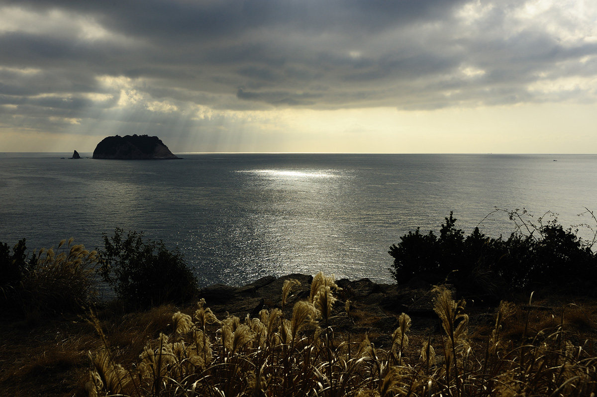

7코스의 주요 관광지
-
바다위에 홀로 우뚝, 우직한 외돌개

'장군석’, ‘할망 바위’라는 이름으로도 불리는데, 최영장군이 원나라와 싸울때, 바위를 장군처럼 꾸며놓아 적군을 자멸하게 했다는 설화가 있다.
-
기암 절벽과 바다 경치를 볼 수 있는 곳, 돔베낭골

기암절벽과 울창한 상록수림 짙푸른 바다와 한대 어울어져 동쪽으로는 문섬, 새섬 남서쪽으로 범섬이 한폭의 그림같은 경관을 맞이한다.
-
달빛을 품은 작은 포구, 월평포구

올레길을 걷다가 발견하는 숨은 선물 같은 월평포구는 고즈넉하고 잔잔한 바다와 함께 어우러진 바위와 산책로를 만나볼 수 있다.
#제주_올레길
외돌개에서 월평마을까지. 올레 7코스

외돌개부터 월평마을까지 이르는 올레길 7코스는 제주 올레길의 베스트셀러라고 할 수 있다. 바닷길과 내륙길이 적절히 조화되어 있으며, 억새와 들꽃이 만발한 길이있어 아기자기한 감동이 깃든 코스다. 올레인들이 가장 사랑한다는 자연생태길 ‘수봉로’도 포함되어 있다. 곳곳에 쉬어갈 만 한 카페나 쉼터도 다른 올레길에 비해 많은 편이다. 가장 많은 사람들이 찾는 코스지만, 난이도가 있는 편이니 참고하자. 일강정 바당올레에서 서건도 앞까지 이르는 길이 조금 험하니 주의해야한다.